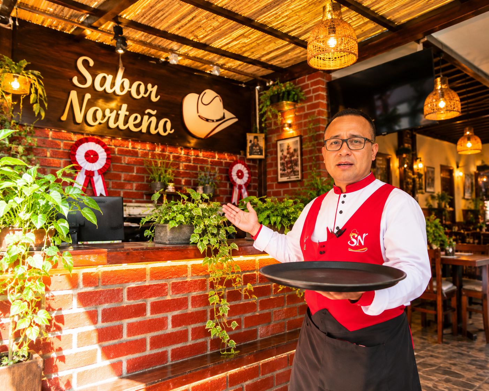

Misión
Compartir platos tradicionales de calidad y brindar una atención cordial.
Gastronomía peruana
Disfruta de recetas tradicionales, ingredientes frescos y el sabor que representa nuestra tierra.
Descubrir nuestra cartaConoce nuestra propuesta inspirada en la gastronomía del norte peruano.
Sabor Norteño es una propuesta de restaurante dedicada a compartir platos tradicionales de la gastronomía peruana, especialmente los sabores característicos del norte del país.
Buscamos ofrecer una experiencia agradable mediante recetas representativas, ingredientes seleccionados y una presentación que valore nuestra identidad culinaria.
Compartir platos tradicionales de calidad y brindar una atención cordial.
Promover y conservar los sabores que representan al norte peruano.

Imágenes de algunos platos que forman parte de nuestra propuesta gastronómica.
Este espacio puede mostrar los datos reales del restaurante cuando estén confirmados.
Ubicación referencial: Chiclayo, Lambayeque, Perú.
Agrega aquí un número telefónico, correo y horario reales antes de publicar el sitio como página comercial.